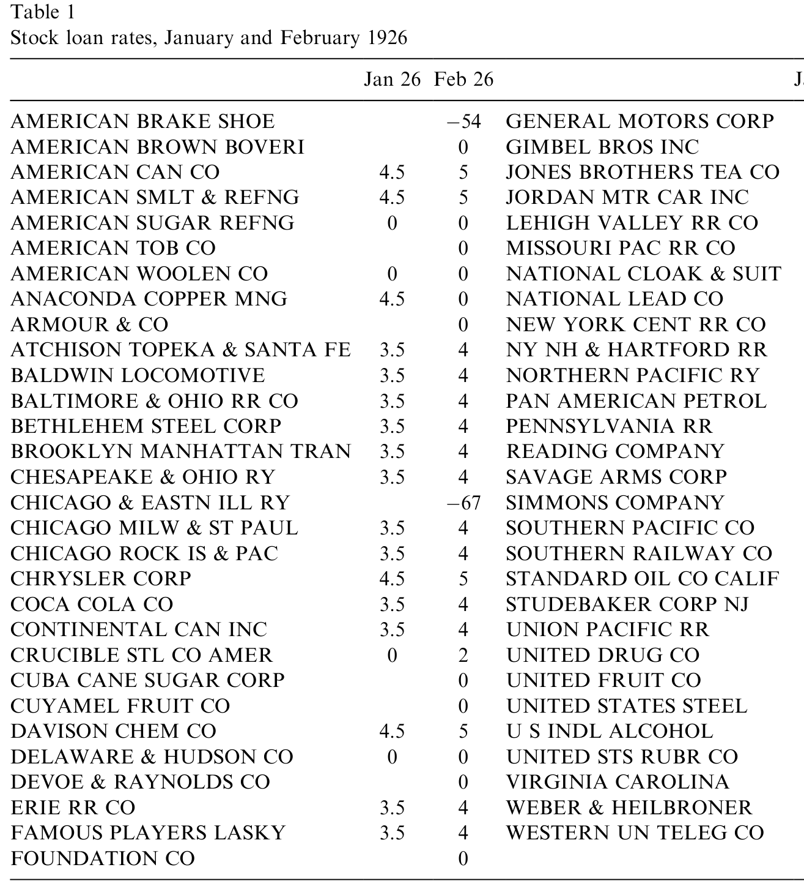
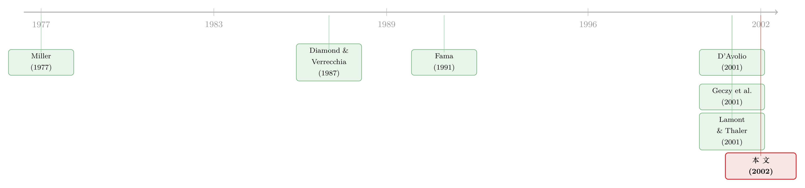

想做空，得先借到那张股票——一份 1926 年的借券账本，照出了「贵」的代价
本文读的是 Jones & Lamont (2002, Journal of Financial Economics)：他们翻出 1926–1933 年纽约交易所「借券大堂」每天公开见报的借券利率，证明那些做空很贵、或刚刚被挤进借券名单的股票，估值偏高、随后收益偏低——新进入者的规模调整后月度收益要低 1–2%。更扎心的是，即便扣掉高昂的做空成本，做空它们仍然赚钱。这意味着除了「成本」，还有一层「没人愿意去做空」的力量在托着价格。
1 一只每天要你交五毛钱的股票
先讲一个 1927 年的故事。
那一年 1 月底，纽约交易所里有一只叫 Wheeling & Lake Erie Railroad 的铁路股。如果你想做空它，借一股的代价是：每天向出借人付 50 美分。而这只股票当时的价格不过 $62.125。换算成年化，你要倒贴 294% 的「利率」才借得到这张票——彼时绝大多数股票的借券利率（以及拆借市场上的 call-money rate）只有 4% 左右。到了 2 月，这笔日费一度涨到惊人的每天 7 美元一股。
请注意，这还不是「股价会跌」的赌注，而是纯粹的持有成本。你押的不是方向，而是：这只票一天得跌掉至少 50 美分，你才不亏。换句话说，哪怕你笃定它被高估了、笃定它要跌，你也未必敢动手——因为光是「把空头仓位维持住」这件事，每天都在烧钱。
于是一个最朴素、却被主流金融学长期回避的问题浮出水面：如果做空一只股票如此昂贵，那么这只股票，是不是就可以「合法地」一直贵着？
这正是 Jones 和 Lamont 这篇论文的全部张力所在。而他们手里，恰好攥着一份别人没有的东西——一份能把「做空的代价」按天、按股、明码标价地记录了整整八年的账本。
2 为什么「贵」可以让股票一直贵下去
要理解这篇论文，得先把 Miller (1977) 那个老问题想清楚。
设想一只股票的基本面价值（fundamental value）是 $100——在一个没有摩擦的世界里，它就该卖 $100。现在假设做空它要花 $1。那么套利者就没办法把价格从 $101 压回 $100：
$$ P \;=\; V \;+\; c, \qquad V=100,\; c=1 \;\Rightarrow\; P=101 $$
只要这 $1 是每天都要付的持有成本，做空这只票就变成了一场「赌它每天至少跌 1 美元」的豪赌。在这样的市场里，一只股票可以非常高估；可只要套利者无法从中赚到超额收益，市场在 Fama (1991) 的意义上仍然是「有效」的——他说得很妙：偏离有效市场的程度，只要还落在「信息成本与交易成本」之内，就不算无效。摩擦一旦够大，「有效价格」就可以离「无摩擦价格」很远。
但这里有一个极其容易被忽略的细节，论文专门拎出来讲。做空时，空头要向出借股票的人付一笔费用——一个人的成本，是另一个人的收入。还是那只 $101 的票：假设它明天就会跌回 $100，而做空一股要付出借人 $1。那么出借人和空头，其实两边都不赚不赔。论文管这只票叫「高估（overpriced）」，可在借券市场的均衡里，持有人和出借人都站在各自的平衡点上。
这就是全文最微妙的一句话：我们说一只股票「高估」，用的是传统口径的收益率（即忽略出借股票所得的利息收入）。高做空成本预示着低的传统收益率——但这并不意味着有人在「白送钱」。Duffie (1996) 在美国国债市场里早把这层道理写成了模型：出借费会被资本化进证券价格里。
不过，光有「成本」还不够。成本能解释「为什么理性的套利者不去做空高估的票」，却解释不了「为什么还有人去买这只高估的票」。所以 Miller 式的高估需要两样东西同时存在：一是交易成本，二是一群需求曲线向下倾斜的投资者（differences of opinion, 意见分歧）。
这一点，Diamond and Verrecchia (1987) 用一个反例讲得淋漓尽致。在他们的噪声理性预期模型里，卖空约束确实阻碍了私有信息的传递，但没有任何股票会在公开信息条件下被高估——因为理性的、不知情的交易者会把约束「算进去」，价格因此是无偏的。于是，要让 Miller 的高估真正发生，你还得假设那些握着股票、又不肯出借的人，本身就是不知情的、或者非理性的。Lamont and Thaler (2001) 研究的那批明显高估、做空成本极高的科技股分拆（carve-outs），讲的就是这种「投资者犯错」的故事。
把这两块拼在一起，论文的检验目标就清晰了：找一个真实市场，它能直接、公开地告诉我们「做空一只股票到底有多贵」，再看看贵的票是不是真的随后表现更差。
3 借券市场长什么样
接着，一个自然的问题是：这样的市场，去哪儿找？
现代的借券市场（D'Avolio, 2001；Reed, 2001）其实很难研究——它是分散的、私下议价的、数据攥在各家券商和机构手里。你想做空一只票，券商先看自己有没有、保证金账户里的客户有没有、相熟的同行有没有，实在借不到才去找人。多数大盘股「又便宜又好借」，回扣率（rebate rate）紧贴隔夜 Fed Funds；少数被借爆的票则「on special」，回扣率低甚至为负——负回扣意味着借券方不但拿不到现金抵押品的利息，反而要每天倒贴出借人。（关于现代借券市场的运作，可参见《做空之前，你得先借到那张股票》与《「特殊」的不只是国债：一份借券账本，替做空策略算了笔真账》。）
然后——这才是论文真正的「考古发现」——Jones 和 Lamont 注意到，1926–1933 年的纽约交易所根本不是这样。那时候，一部分股票的借贷是在交易所大厅里一个叫「借券大堂（loan crowd）」的集中市场完成的。每天下午三点收盘后最热闹，经纪人们在「loan post」前盘点各自的净借券需求，撮合出每只证券一个市场出清的隔夜借券利率，而这个利率，第二天就会原封不动地登在《华尔街日报》上。
也就是说，做空的价格，曾经是公开见报的。
论文的表 1 就抄录了两天的原始记录：1926 年 1 月底和 2 月底。1 月里多数股票（U.S. Steel、Chrysler 这些当时最大、最活跃的票）借券利率是 3.5% 或 4.5%，少数为零；作为参照，当时的 call-money rate 是 5%，所以多数票是「略低于拆借利率」被借出去的。

Table 1: shows two days of stock loan rates, for the last trading day of January
如表 1 所示，1 月的数据里没有一只票以「溢价（premium，即负回扣）」交易，却有一大堆票的利率恰好等于零——如果利率真是随供需连续分布的，这种「一大坨刚好压在零」的现象，本身就不正常。它暗示着：零，是一道有摩擦的边界。
这套集中市场如今已经彻底消失了。论文顺手提醒了一句颇有金融史意味的观察：和国债市场、衍生品市场不同，股票借券市场在某些方面其实倒退了——借券利率从「集中决定、公开可见」退回到了「私下议价、外人看不见」。我们今天研究做空，反而比 1920 年代更摸黑。
4 名单本身，就是一个信号
但真正关键的一步，藏在 1 月与 2 月那两列数字的对比里。
到了 1926 年 2 月，名单变长了。那些 1 月就在册的老股票，利率模式大体照旧；可新加进来的 17 只票，借券利率清一色是零或负。其中 Chicago and Eastern Illinois Railway 以「十六分之一」的溢价借出——借券方每天要按每股 1/16 美元倒贴出借人，年化 −67%。
为什么这 17 只票偏偏在 2 月被挤进了借券大堂？逻辑只有一条：相比 1 月，要么它们的可借出供给（lendable supply）掉了，要么对它们的做空需求涨了。《华尔街日报》在 1926 年 3 月 1 日的原话是：「随便问哪个常借股票给空头的经纪人，他都会告诉你，需求比这几个月里任何时候都旺。」
于是论文提炼出一个极其漂亮的「显示性偏好」洞见：一只股票第一次出现在借券名单上，本身就是做空需求高涨的最佳证据。——高到什么程度？高到内部撮合（券商自有库存、保证金账户、相熟同行）已经满足不了，才不得不抛头露面地走进集中借券大堂。Leffler (1951) 和 Meeker (1932) 都记载过：经纪人能不去借券大堂就不去，因为既省记账的功夫，又不必把出借的好处分给别家。
这个「进名单」的信号，比短仓（short interest）高明得多。短仓有个致命的内生性毛病：它是供给和需求的交点。一只票被借爆、贵到没人敢借，短仓反而可能很低；一只「无法做空」的票，做空成本无穷大，短仓却是零。Lamont and Thaler (2001) 那批科技股就是反例——高估和做空成本在下降，短仓反而在上升。难怪 Figlewski and Webb (1993) 发现短仓在 1973–1979 年能预测收益、到 1979–1983 年又失效了。而「首次进入借券名单」这个事件，干净地指向了需求那一侧。（把做空当成一种「投票」、看这票投得准不准，正是后来《把卖空看成一次「投票」》那条线的思路源头。）
5 数据与识别
把这套逻辑落到数据上，论文做的事情是：
- 数据来源：1926–1933 年逐日见报于《华尔街日报》的借券大堂利率，手工收集，平均每月约
90只活跃交易的股票，跨度 8 年。作者称这是「迄今为止规模最大的做空成本面板数据集」。配套的价格、收益与 CRSP 对接，市场基准与规模分组用的是 Fama-French 提供的数据。 - 观测单位：股票 × 月。
- 覆盖面：注意，借券大堂里只是一小撮票。1926 年 2 月名单上有
59只，而同期 CRSP 记录了518只纽约上市股票——只有11%进了样本。而且这 59 只里，多数借券其实仍在券商内部完成，从没走进大堂。 - 核心解释变量：两个。其一是做空成本本身（借券利率有多低、是否为负/溢价）；其二是「新进入借券名单」这一事件。
- 识别思路：这不是一个带工具变量或断点的因果设计，而是一个事件研究 (event study) 式的「资产定价可预测性」检验——围绕一只股票首次进入借券名单的时点，追踪它进入前、进入时、进入后的价格与随后的收益。论文反复强调一个让识别变干净的好处：我们不需要知道借券成本高到底是因为供给少还是需求多。无论哪种原因，结论都一样——做空贵的票可以被高估，因为纠正高估本身就贵。
这是这篇论文方法论上最讨巧的地方：它把「为什么贵」这个棘手的内生性问题，直接绕过去了。它只问一件事：贵，会不会预示着随后的低收益？
6 主要结果：贵的票，随后真的跌
结果和高估假说完全吻合。
第一，横截面上，那些做空昂贵、或刚刚进入借券大堂的股票，估值偏高、随后收益偏低。对于「新进入者」这一组，规模调整后（size-adjusted）的收益要低 1–2% 每月——这不是一个可以忽略的小数。
第二，时间序列上，价格围绕「进名单」这个事件画出了一条教科书般的高估—回归曲线：进入借券名单之前价格上涨，在即将进入的前夕见顶，随后随着高估被纠正而回落。一只票被做空需求挤进大堂的那一刻，往往正是它最被高估的时刻。
单凭这条可预测性，已经足够重要了：它说明交易成本确实挡住了套利者，让他们没能把高估的票压下去。这是对「有限套利（limited arbitrage）」一个干净的历史佐证。（同样的「借不到券 → 价格裂开」的逻辑，在期权市场里也留下了指纹，可参见《同一份现金流，两个价格：当「借不到的券」撑开了期权与股票的裂缝》。）
7 反转：贵，贵过了成本本身
但故事到这里还没完。真正的反转在最后。
如果市场只是「有效到信息与交易成本为止」，那么这些高估的票，被高估的幅度应当恰好等于做空它们的成本——多一分，套利者就该冲进来把差价吃掉。
然而 Jones 和 Lamont 发现：借券大堂的新进入者，跑输的幅度超过了做空它们的成本。也就是说，哪怕你老老实实付掉那些高昂的借券费，做空它们依然是一桩赚钱的买卖。
这是一个让人不太舒服的结论。它意味着：这些票不仅被高估了，而且被高估得超过了「可观测的做空成本」所能解释的程度。剩下那一截，只能归因于某种没被测量到的东西——要么是没人愿意去做空（unwillingness to short），要么是某种我们观测不到的隐性做空成本。回到第 2 节的逻辑：成本能解释「理性套利者为何袖手」，但解释不了「为何还有人接盘」；这块「超额的高估」，正是 Miller 所需要的那群意见分歧、且不肯出借股票的乐观持有人留下的痕迹。
换句话说——做空很贵，是事实；但「贵」并不是全部的故事。在 1920 年代那个把做空成本明码标价的市场里，价格被托起来的高度，超过了价签上印着的那个数字。
8 文献脉络
把这条线捋一捋，会看得更清楚。
最上游是 Miller (1977)：卖空约束 + 意见分歧 → 股票可能被高估，这是整条研究的「原点」。紧接着 Diamond and Verrecchia (1987) 给出了一个重要的反向约束——理性预期下，仅有约束并不足以制造高估，你还需要不理性或异质的持有人。Fama (1991) 则从市场有效性的高度，把「摩擦内的偏离」收进了有效市场的定义里，为后来一切关于「有限套利」的实证立下了语义基础。

到了 2000 年前后，借券市场第一次被大规模地直接观测：D'Avolio (2001) 描摹了现代借券市场的全貌，Geczy, Musto and Reed (2001) 证明「股票也会变特殊」，Lamont and Thaler (2001) 则抓住科技股分拆这个极端样本，把「明显高估 + 高做空成本 + 投资者犯错」三件事钉在了一起。但这些研究有个共同的软肋：数据都只覆盖 2000 年前后一年左右的窗口，横截面检验缺乏统计功效。
Jones and Lamont (2002) 正是补上了「长时间维度」这块缺口——八年面板、近百只股票每月、做空成本公开可见。它一方面验证了「circa 2000」观察到的诸多规律在 1920 年代同样成立（大盘股一般便宜借、小盘股更贵，但只在样本前半段如此），另一方面，第一次让「做空成本预测收益」这件事有了像样的检验力。这，就是它在这条脉络里的位置。
9 评论与延伸（Q&A + 研究方向）
(a) 几个可能的疑问
Q：既然出借人收了费、两边都不赚不赔，凭什么说股票「高估」了？
因为「高估」用的是传统收益率口径——只看价格涨跌，不计出借股票的利息收入。从持有人和出借人各自的账本看，他们确实在均衡上；但一个忽略借券收入的旁观者会发现，这只票随后的（传统口径）收益偏低。Duffie (1996) 早把这层「出借费被资本化进价格」的道理写成了模型。
Q：Diamond-Verrecchia 不是证明了「公开信息下不会高估」吗？这篇怎么还测出了高估？
关键在于持有人是否理性。D-V 的无偏结论，前提是理性的不知情交易者会把卖空约束「算进」价格。一旦你允许一部分持有人是非理性的、或意见极度分歧的乐观者，Miller 式高估就回来了。论文最后那个「高估超过成本」的发现，恰恰是在为这种异质性/非理性的存在提供证据。
Q：为什么不直接用短仓（short interest）来度量做空需求？
因为短仓是供需的交点，方向是模糊的：贵到借不动的票短仓可能很低，无法做空的票短仓干脆是零。Lamont-Thaler 的样本里甚至出现高估下降、短仓反升的反向相关。论文用「首次进入借券名单」替代短仓，干净地指向了需求一侧——它意味着内部撮合已经满足不了做空需求。
Q：只有 11% 的股票进了借券大堂，这个样本会不会严重选择性偏误？
这是最该担心的地方。样本是「做空需求高到不得不公开借券」的那批票，天然偏向有争议、被炒作的标的；从这些票身上估出来的高估幅度，未必能外推到全市场。论文的辩护是：它的目标本就不是估计「全市场的平均高估」，而是检验「做空约束 → 高估」这个机制是否存在；对机制检验而言，挑出约束真正绑定的样本反而是合理的。
Q：1926–1933 横跨了 1929 年大崩盘，结果会不会只是「崩盘期」的产物？
论文确实注意到样本前后半段的差异（比如「小盘股更贵」只在前半段成立），这提示规律并非时间上铁板一块。把崩盘前后拆开看、确认新进入者的低收益不是被某一段极端行情绑架，是读这篇文章时该追问的稳健性。
Q：这对今天还有意义吗？借券大堂早就没了。
有，而且耐人寻味。论文指出股票借券市场在「透明度」上反而倒退了——利率不再集中决定、公开可见。这意味着今天的研究者要花更大力气、用专有数据才能重建当年报纸上一行就能看到的东西；也意味着「做空成本」作为定价信号，今天比 1920 年代更难被市场参与者实时观测。
(b) 几个可能的研究问题与提案
1. 公司债里的「借券大堂」
【经济故事】股票能被高估，是因为做空它贵；公司债能不能也因为「做空贵 / 借不到券」而被高估？信用市场里同样有意见分歧（对违约概率的判断），也有借券特殊性（on special）。把 Jones-Lamont 的「进入借券名单 = 做空需求信号」搬到公司债，检验那些借券特殊化的债券是否随后利差走阔、收益偏低。 【可行性】中。需要公司债借券费率 / specialness 数据（部分来自做市商或数据商）与 TRACE 成交，识别上可借用「债券首次变特殊」作为事件。难点是公司债做空本就稀少、借券数据稀疏，样本功效是真问题。
2. 外资可投资度与做空约束的交互
【经济故事】很多新兴市场对外资既限购、又限做空。如果一只票「外资能买、但谁也做不了空」，Miller 的高估应当更严重。把「可投资度（investability）」与本地做空约束叠起来，看外资进入是抬高了估值（需求侧），还是因为放开做空而压低了估值。 【可行性】中。可投资度数据较成熟，难点是逐国、逐时点的做空约束变更需要手工整理制度史；识别可用做空禁令的开关作为准自然实验。
3. 流动性危机中的做空成本与「超额高估」
【经济故事】2008 与 2020 年，监管一度禁止或限制做空。Jones-Lamont 的「高估超过成本」暗示存在不可观测的「不愿做空」。危机里，当可观测的借券成本飙升、甚至直接归零（禁令），价格被托起的幅度会怎样变化？这能把「成本」与「不愿/不能做空」两股力量分离开。 【可行性】中偏高。借券费率数据（如 Markit/IHS）在危机窗口可得，做空禁令提供了清晰的事件时点；可与《差点死掉的那个市场：一场公司债流动性危机的微观解剖》那类危机微观结构研究对接。
我的判断
这篇论文的贡献，与其说在「方法」，不如说在「史料」。它最聪明的地方，是意识到 1920 年代那个早已消失的借券大堂，把一个现代研究者千金难求的变量——做空的逐日价格——印在了报纸上。在此之上，「首次进入借券名单」这个显示性偏好信号，干净利落地绕开了「成本到底是供给还是需求驱动」的内生性死结，让一个 1977 年就提出、却长期缺乏长样本检验的假说，第一次有了像样的功效。而「高估超过成本」这个反转，把论文从「成本限制套利」推到了「还有一层不愿做空的力量」，这一步的分量最重。
对识别，我有两点保留。其一是样本选择：进借券大堂的本就是争议票，从它们身上量出的高估幅度难以外推到全市场，论文对此的辩护是诚实的，但读者心里要清楚结论的边界。其二是收益度量：所谓「profitable to short even after costs」，结论对「成本怎么算、收益怎么调整、规模基准怎么配」相当敏感，而本文给出的核心数字是「规模调整后月度低 1–2%」这一量级——更细的回归系数与 t 值，需要回到原文第 5 节去对账，本文据以评述的是作者明确陈述的口径。
后续我最想看到的，是把这套「公开做空价格」的范式搬进信用市场与外资持有人的场景：当做空一只债、或做空一个被外资追捧的市场同样昂贵时，那块「超过成本的高估」还在不在？如果在，它会不会正是今天我们在拥挤的信用利差和被高估的新兴市场里，反复看见却始终量不准的那股力量。
参考文献
- Diamond, D., Verrecchia, R. (1987). Constraints on short-selling and asset price adjustment to private information. Journal of Financial Economics 18, 277–311.
- Duffie, D. (1996). Special repo rates. Journal of Finance 51, 493–526.
- Fama, E. (1991). Efficient capital markets: II. Journal of Finance 46, 1575–1617.
- Figlewski, S., Webb, G. (1993). Options, short sales, and market completeness. Journal of Finance 48, 761–777.
- Jones, C. M., Lamont, O. A. (2002). Short-sale constraints and stock returns. Journal of Financial Economics 66(2–3), 207–239.
- Lamont, O., Thaler, R. (2001). Can the market add and subtract? Mispricing in tech stock carve-outs. Unpublished working paper, University of Chicago.
- Meeker, J. (1932). Short-selling. Harper & Brothers Publishers, New York.
- Miller, E. (1977). Risk, uncertainty, and divergence of opinion. Journal of Finance 32, 1151–1168.